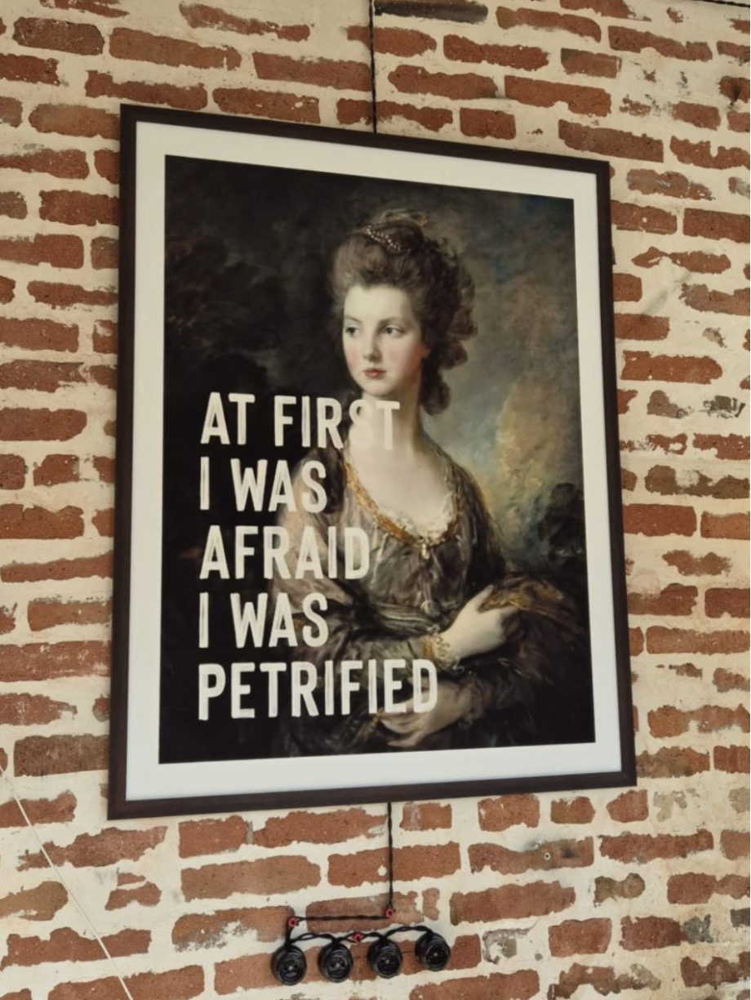

התחלנו לדבר על הביצועים של העובד. סיימנו בביצועים של המנהל.

מנהל הגיע אליי מתוסכל מעובד שלא הראה מספיק יוזמה ולא התקדם כמו שציפו ממנו. הפער השפיע על הצוות, והמנהל ידע שמשהו חייב להשתנות. אבל כשהגיע הרגע לטפל בזה, הוא היסס. הוא רצה להיות הוגן, לשמור על הקשר, ולא להוריד לעובד את המוטיבציה.
ככל שפירקנו את המצב, התברר שהאתגר הוא לא רק איך לטפל בביצועים של העובד. האתגר היה איך לדרוש אחריות בלי להרגיש שהקשר ייפגע.
ראיתי את המתח הזה מתבטא בדרכים שונות. מנהלים דוחים את השיחה, מרככים את המסר, או מקווים שהדברים ישתפרו מעצמם. לא כי לא אכפת להם, אלא כי אי-הנוחות המיידית מרגישה גדולה יותר מהמחיר של לחכות.
אבל גם לחכות יש מחיר.
העובד לא מקבל הזדמנות אמיתית להבין את הפער, התסכול של המנהל רק גדל, והצוות עלול לשאת בתוצאות.
הובלה פירושה לקבל את זה ששיחה קשה עלולה להעמיס על הקשר בטווח הקצר, ולהכיר בכך שהימנעות ממנה יכולה לגרום נזק גדול יותר לאורך זמן.
בעיניכם: מה הכי מקשה עליכם בשיחות האלה, ומה עזר לכם להתגבר על ההיסוס?